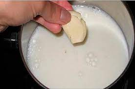

зачем варить чеснок в молоке
Пожилой аптекарь Галина Ивановна из города Жлобин имеет
одну очень странную традицию. вот слова очевидца:
"Галька то? А, ну она нормальная баба вродь, вот бывает: надо коров выгнать, а Васьки то - нема!
Ну я её просто по людски прошу и она без этих всяких выпендрёх выгоняет на пастбище. Но странная она,
какая-то...Бывает выйду в туалет часов этак в 5, а там вонь стоит на весь двор!
думала Ваньк наш мутит че-т опять, но неет! Это галька опять со своим чесноком
...нахрен он вообще ей сдался..."

это слова соседей Галины. Давайте разберёмся, зачем она варит чеснок в молоке каждое утро
на главную...